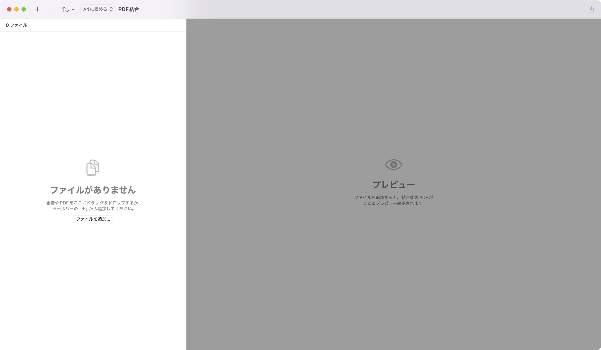
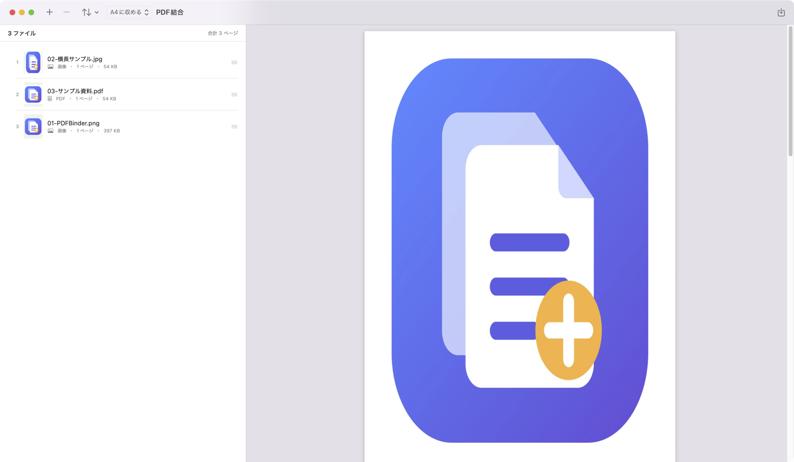

1. インストールと初回起動
- DMGを開き、PDFBinder.app を Applications フォルダへドラッグします。
- コピー完了後、DMG内の PDFBinder 初回起動準備.app を開きます。
- 確認画面で「解除して起動」を選びます。管理者認証が表示された場合は、MacのパスワードまたはTouch IDで許可します。
- 次回からは「アプリケーション」フォルダの PDFBinder を通常どおり開けます。
初回起動準備アプリ自体を開けない場合：
Finderで「PDFBinder 初回起動準備.app」をControlキーを押しながらクリックし、「開く」→「開く」を選んでください。
初回起動準備はPDFBinderだけの隔離属性を削除します。Mac全体のGatekeeper機能を無効化するものではありません。
2. 画面の見方
左側が結合するファイルの一覧、右側が完成PDFのプレビューです。ファイルを追加すると、表示用に最適化した画像でプレビューが高速に自動更新されます。

＋ファイルを追加
画像またはPDFを複数選択できます。まとめて追加したファイルは、名前の昇順に並びます。ショートカットは ⌘ O です。
−選択を削除
左の一覧で選択したファイルだけを、結合対象から取り除きます。
⌫すべてクリア
読み込んだファイルをすべてリストから取り除きます。元ファイルは削除されません。
⇅並び替え
名前・更新日時・サイズで並べ替えます。現在のソート順にはチェックマークが付き、行をドラッグして手動調整もできます。
⇧PDFを作成
右上の書き出しボタンです。ショートカットは ⌘ S です。
3. 画像とPDFをひとつにまとめる
- 画像・PDFをウィンドウへドラッグするか、左上の「＋」から選びます。
- 左の一覧で、ファイルを完成PDFにしたい順へドラッグします。表示されている番号が結合順です。
- 右側のプレビューで、ページの順番と見え方を確認します。
- 右上の書き出しボタンを押し、ファイル名と保存先を選びます。
- 進捗ウインドウが閉じ、「書き出し完了」が表示されたら完成です。「Finderで表示」から保存場所を確認できます。
画質について：
プレビューだけを画面表示向けに縮小しています。作成するPDFには原寸品質の画像を使用します。同じ内容を続けて保存する場合は、完成データを再利用して短時間で書き出します。

4. 画像ページの大きさを選ぶ
ツールバーの「原寸」メニューから、画像をPDFページへ配置する方法を選択できます。初期値は「原寸」です。元からPDFのファイルは変更されません。
A4に収める
縦向きA4ページの中央へ、画像全体が切れないよう比率を保って配置します。写真やスキャン画像のサイズを揃えたい場合に適しています。
原寸（初期値）
画像が持つ大きさをそのままPDFページにします。画像ごとのページ寸法を維持したい場合に使用します。
5. 対応形式と便利な操作
| 対応ファイル | PDF、PNG、JPEG、HEICなど、macOSが画像として認識する形式 |
|---|---|
| 複数選択 | ファイル選択画面で ⌘ を押しながらクリックします。 |
| 選択削除 | 左の一覧で選択後、Deleteキーまたはツールバーの「−」を使います。元ファイルは削除されません。 |
| すべてクリア | ツールバーのゴミ箱ボタンで、読み込んだファイルをまとめてリストから取り除けます。元ファイルは削除されません。 |
| 同じファイル | 同じファイルを複数回追加できます。同じページを繰り返したい場合に利用できます。 |
| プライバシー | 結合処理はMac内で完結し、ファイルを外部サービスへ送信しません。 |
6. 困ったとき
| 「開発元を確認できない」と表示される | PDFBinderをApplicationsへコピーした後、DMG内の「PDFBinder 初回起動準備.app」を実行してください。 |
|---|---|
| 初回起動準備でアプリが見つからない | 表示される「アプリを選択…」から、コピーしたPDFBinder.appを選択してください。Bundle IDを確認してから安全に処理します。 |
| ファイルを追加できない | ファイルがPDFまたは画像形式か、読み取り権限があるかを確認してください。 |
| プレビュー更新に時間がかかる | ページ数や画像サイズが大きい場合は処理に時間がかかります。更新中の表示が消えるまでお待ちください。 |